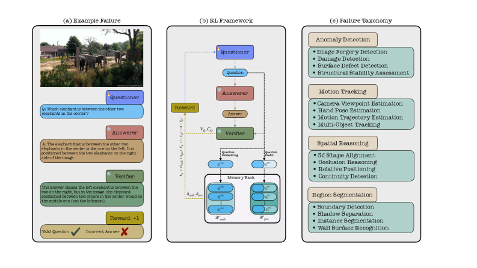

New · 2026
arXiv, 2026
An RL framework that trains a questioner agent to generate increasingly complex queries that automatically expose weaknesses in vision-language models without human intervention.